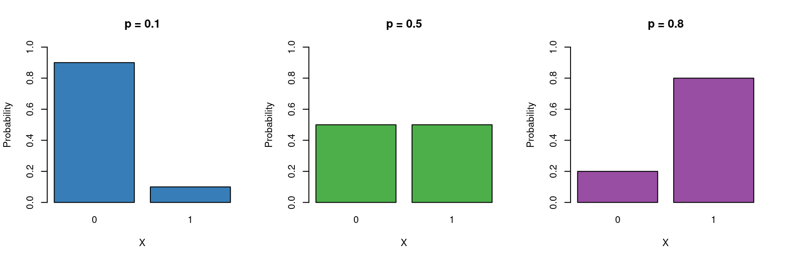
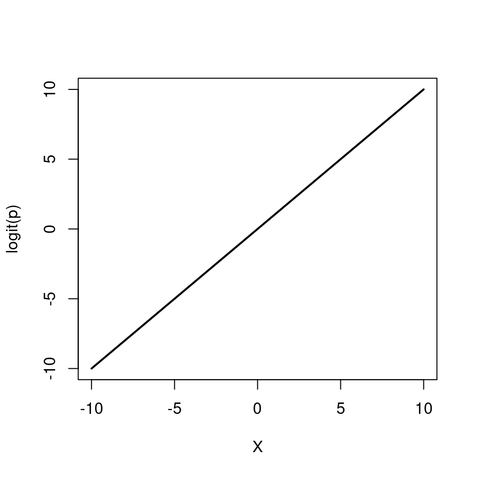
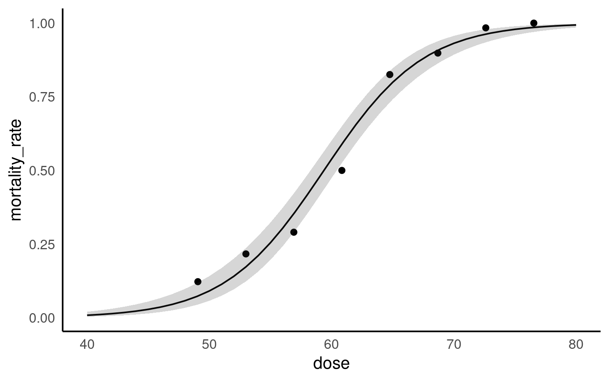

29 Logistic regression (for binary data)
When our response variable is binary, we can use a glm with a binomial error distribution
So far we have only considered continuous and discrete data as response variables. What if our response is a categorical variable (e.g passing or failing an exam, voting yes or no in a referendum, whether an egg has successfully fledged or been predated, infected/uninfected, alive/dead)?
We can model the probability \(p\) of being in a particular class as a function of other explanatory variables.
These type of binary data are assumed to follow a Bernoulli distribution (which is a special case of Binomial) which has the following characteristics:
\[ Y \sim \mathcal{Bern}(p) \]
- Binary variable, taking the values 0 or 1 (yes/no, pass/fail).
- A probability parameter \(p\), where \(0 < p < 1\).
-
Mean = \(p\)
- Variance = \(p(1 - p)\)
Let us now place the Gaussian (simple linear regression), and logistic models next to each other:
\[ \begin{aligned} Y & \sim \mathcal{N}(\mu, \sigma^2) &&& Y \sim \mathcal{Bern}(p)\\ \mu & = \beta_0 + \beta_1X &&& ?? = \beta_0 + \beta_1X \end{aligned} \]
Now we need to fill in the ?? with the appropriate term.
We cannot simply model the probability as \(p = \beta_0 + \beta_1X\), because \(p\) cannot be negative. \(\log{p} = \beta_0 + \beta_1X\) won’t work either, because \(p\) cannot be greater than 1.
Instead we model the log odds \(\log\left(\frac{p}{1 - p}\right)\) as a linear function. So our logistic regression model looks like this:
\[ \begin{aligned} Y & \sim \mathcal{Bern}(p)\\ \log\left(\frac{p}{1 - p}\right) & = \beta_0 + \beta_1 X \end{aligned} \]
Again, note that we are still “only” fitting straight lines through our data, but this time in the log odds space. As a shorthand notation we write \(\log\left(\frac{p}{1 - p}\right) = \text{logit}(p) = \beta_0 + \beta_1 X\).

We can also re-arrange the above equation so that we get an expression for \(p\)
\[ p = \frac{e^{\beta_0 + \beta_1 X}}{1 + e^{\beta_0 + \beta_1 X}} \]

Note how \(p\) can only vary between 0 and 1.
To implement the logistic regression model in R, we choose family=binomial(link=logit) (the Bernoulli distribution is a special case of the Binomial distribution).
glm(response ~ explanatory, family=binomial(link=logit))29.1 Example: Dosage response to pesticides

This small dataset is from an experiment looking at mortality in batches of flour exposed to different doses of pesticides.
The question of interest is:
How does pesticide dose affect mortality in the flour beetle Tribolium castaneum
| Dose | Number_tested | Number_killed | Mortality_rate |
|---|---|---|---|
| 49.06 | 49 | 6 | 0.1224490 |
| 52.99 | 60 | 13 | 0.2166667 |
| 56.91 | 62 | 18 | 0.2903226 |
| 60.84 | 56 | 28 | 0.5000000 |
| 64.76 | 63 | 52 | 0.8253968 |
| 68.69 | 59 | 53 | 0.8983051 |
The data columns are:
Dose: Pesticide dosage (mg)
Number_tested - Number of beetles in application
Number_killed: Number of beetles that died
Mortality_rate Calculated proportion of deaths
29.2 Data tidying
A binomial model calculates the numbers of wins/losses out of a series of trials, here that will refer to beetles “successfully killed” by the pesticide/ survivors. The GLM of the binomial counts will analyse the number of each batch of beetles killed, while taking into account the size of each group
Your turn
29.3 Fitting a binomial model
Call:
glm(formula = cbind(number_killed, number_survived) ~ dose, family = binomial,
data = beetles)
Coefficients:
Estimate Std. Error z value Pr(>|z|)
(Intercept) -14.57806 1.29846 -11.23 <2e-16 ***
dose 0.24554 0.02149 11.42 <2e-16 ***
---
Signif. codes: 0 '***' 0.001 '**' 0.01 '*' 0.05 '.' 0.1 ' ' 1
(Dispersion parameter for binomial family taken to be 1)
Null deviance: 267.6624 on 7 degrees of freedom
Residual deviance: 8.4379 on 6 degrees of freedom
AIC: 38.613
Number of Fisher Scoring iterations: 4So we are now fitting the following model
\[ Y \sim Bern(p) \] \[ \log\left[ \frac { P( \operatorname{oring\_binary} = fail) }{ 1 - P( \operatorname{oring\_binary} = fail) } \right] = \beta_{0} + \beta_{1}(\operatorname{temp}) \]
Which in R will look like this:
- Intercept = \(\beta_{0}\) = -14.5
When pesticide dose is zero the mean log-odds are -14.5 [95%CI: -17.2 - -12.1] for a death in beetles
- dose = \(\beta_{1}\) = 0.24 [95%CI: 0.2 - 0.29]
For every rise in the pesticide dose by 1mg, the log-odds of a death increase by 0.24.
29.3.1 Interpreting model coefficients
We first consider why we are dealing with odds \(\frac{p}{1-p}\) instead of just \(p\). They contain the same information, so the choice is somewhat arbitrary, however we’ve been using probabilities for so long that it feels unnatural to switch to odds. There are good reasons for this, however. Odds \(\frac{p}{1-p}\) can take on any value from 0 to ∞ and so part of our translation of \(p\) to an unrestricted domain is already done (\(P\) is restricted to 0-1). Take a look at some examples below:
| Probability | |
|
|---|---|---|
| \(p=.95\) | \(\frac{95}{5} = \frac{19}{1} = 19\) | 19 to 1 odds for |
| \(p=.75\) | \(\frac{75}{25} = \frac{3}{1} = 3\) | 3 to 1 odds for |
| \(p=.50\) | \(\frac{50}{50} = \frac{1}{1} = 1\) | 1 to 1 odds |
| \(p=.25\) | \(\frac{25}{75} = \frac{1}{3} = 0.33\) | 3 to 1 odds against |
| \(p=.05\) | \(\frac{95}{5} = \frac{1}{19} = 0.0526\) | 19 to 1 odds against |
When we use a binomial model, we produce the ‘log-odds’, this produces a fully unconstrained linear regression as anything less than 1, can now occupy an infinite negative value -∞ to ∞.
\[ \log\left(\frac{p}{1-p}\right) = \beta_{0}+\beta_{1}x_{1}+\beta_{2}x_{2} \]
\[ \frac{p}{1-p} = e^{\beta_{0}}e^{\beta_{1}x_{1}}e^{\beta_{2}x_{2}} \]
We can interpret \(\beta_{1}\) and \(\beta_{2}\) as the increase in the log odds for every unit increase in \(x_{1}\) and \(x_{2}\). We could alternatively interpret \(\beta_{1}\) and \(\beta_{2}\) using the notion that a one unit change in \(x_{1}\) as a percent change of \(e^{\beta_{1}}\) in the odds. That is to say, \(e^{\beta_{1}}\) is the odds ratio of that change.
If you want to find out more about Odds and log-odds head here
29.4 Probability
29.4.1 Making predictions
| dose | number_tested | number_killed | mortality_rate | number_survived | .fitted | .resid | .hat | .sigma | .cooksd | .std.resid |
|---|---|---|---|---|---|---|---|---|---|---|
| 49.06 | 49 | 6 | 0.1224490 | 43 | 0.0736536 | 1.2025499 | 0.2458459 | 1.141959 | 0.3695718 | 1.3847554 |
| 52.99 | 60 | 13 | 0.2166667 | 47 | 0.1726583 | 0.8747551 | 0.3477614 | 1.205381 | 0.3324978 | 1.0831366 |
| 56.91 | 62 | 18 | 0.2903226 | 44 | 0.3533406 | -1.0542088 | 0.3104417 | 1.168435 | 0.3517707 | -1.2695246 |
| 60.84 | 56 | 28 | 0.5000000 | 28 | 0.5891818 | -1.3455544 | 0.2366298 | 1.101468 | 0.3736036 | -1.5400459 |
| 64.76 | 63 | 52 | 0.8253968 | 11 | 0.7896971 | 0.7110658 | 0.2848855 | 1.243451 | 0.1346649 | 0.8408568 |
| 68.69 | 59 | 53 | 0.8983051 | 6 | 0.9078843 | -0.2506399 | 0.2530093 | 1.292579 | 0.0146767 | -0.2899964 |
| 72.61 | 62 | 61 | 0.9838710 | 1 | 0.9626942 | 0.9887023 | 0.1992421 | 1.201427 | 0.1202801 | 1.1048796 |
| 76.54 | 60 | 60 | 1.0000000 | 0 | 0.9854508 | 1.3261731 | 0.1221842 | 1.134404 | 0.0702320 | 1.4154630 |
dose prob SE df asymp.LCL asymp.UCL
49 0.0727 0.01830 Inf 0.0439 0.118
50 0.0910 0.02100 Inf 0.0574 0.141
51 0.1135 0.02370 Inf 0.0747 0.169
52 0.1406 0.02640 Inf 0.0965 0.201
53 0.1730 0.02880 Inf 0.1236 0.237
54 0.2110 0.03090 Inf 0.1568 0.278
55 0.2548 0.03250 Inf 0.1965 0.323
56 0.3041 0.03340 Inf 0.2428 0.373
57 0.3584 0.03380 Inf 0.2951 0.427
58 0.4166 0.03370 Inf 0.3524 0.484
59 0.4772 0.03330 Inf 0.4128 0.542
60 0.5385 0.03260 Inf 0.4743 0.601
61 0.5987 0.03190 Inf 0.5349 0.659
62 0.6560 0.03100 Inf 0.5930 0.714
63 0.7091 0.03000 Inf 0.6471 0.764
64 0.7570 0.02860 Inf 0.6967 0.809
65 0.7993 0.02700 Inf 0.7412 0.847
66 0.8358 0.02500 Inf 0.7808 0.879
67 0.8668 0.02290 Inf 0.8153 0.906
68 0.8927 0.02050 Inf 0.8453 0.927
69 0.9141 0.01820 Inf 0.8710 0.944
70 0.9315 0.01600 Inf 0.8928 0.957
71 0.9456 0.01380 Inf 0.9113 0.967
72 0.9569 0.01180 Inf 0.9267 0.975
73 0.9660 0.01010 Inf 0.9396 0.981
74 0.9732 0.00851 Inf 0.9504 0.986
75 0.9789 0.00715 Inf 0.9593 0.989
76 0.9834 0.00597 Inf 0.9666 0.992
77 0.9870 0.00496 Inf 0.9727 0.994
Confidence level used: 0.95
Intervals are back-transformed from the logit scale Make a ggplot of the change in probability
Take one of your model predictions
If emmeans convert to
as_tibble()firstPlot this on a ggplot
Include 95% confidence intervals (if possible)

Prediction
Can you edit your code to produce a prediction of the mortality rate at a pesticide dose of 0mg?
29.5 Assumptions
The performance package detects and alters the checks. Pay particular attention to the binned residuals plot - this is your best estimate of possible overdispersion (requiring a quasi-likelihood fit). In this case there is likely not enough data for robust checks - we could consider a quasi-likelihood model in order to have more conservative confidence intervals.
# Overdispersion test
dispersion ratio = 1.002
p-value = 0.99229.6 Write-ups
Write up the results
- How would you write up for findings from this analysis?
The report package from easystats can help capture the information needed for full reporting of analytical models.
Can't calculate log-loss.
`performance_pcp()` only works for models with binary response values.
Can't calculate log-loss.
`performance_pcp()` only works for models with binary response values.
We fitted a logistic model (estimated using ML) to predict cbind(number_killed,
number_survived) with dose (formula: cbind(number_killed, number_survived) ~
dose). The model's intercept, corresponding to dose = 0, is at -14.58 (95% CI
[-17.26, -12.16], p < .001). Within this model:
- The effect of dose is statistically significant and positive (beta = 0.25,
95% CI [0.21, 0.29], p < .001; Std. beta = 2.32, 95% CI [1.95, 2.75])
Standardized parameters were obtained by fitting the model on a standardized
version of the dataset. 95% Confidence Intervals (CIs) and p-values were
computed using a Wald z-distribution approximation.